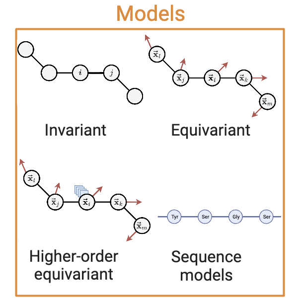

Models#
{kind=link}
To switch between different encoder architectures, simply change the encoder argument in the launch command. For example:
workshop train encoder=<ENCODER_NAME> dataset=cath task=inverse_folding trainer=cpu
# or
python proteinworkshop/train.py encoder=<ENCODER_NAME> dataset=cath task=inverse_folding trainer=cpu # or trainer=gpu
Where <ENCODER_NAME> is given by bracketed name in the listing below. For example, the encoder name for SchNet is schnet.
Note
To change encoder hyperparameters, either
Edit the config file directly, or
Provide commands in the form:
workshop train encoder=<ENCODER_NAME> encoder.num_layer=3 encoder.readout=mean dataset=cath task=inverse_folding trainer=cpu
# or
python proteinworkshop/train.py encoder=<ENCODER_NAME> encoder.num_layer=3 encoder.readout=mean dataset=cath task=inverse_folding trainer=cpu # or trainer=gpu
Invariant Encoders#
Name |
Source |
Protein Specific |
|---|---|---|
|
✓ |
|
|
✓ |
|
|
✗ |
|
|
✗ |
SchNet (schnet)#
SchNet is one of the most popular and simplest instantiation of E(3) invariant message passing GNNs. SchNet constructs messages through element-wise multiplication of scalar features modulated by a radial filter conditioned on the pairwise distance \(\Vert \vec{\vx}_{ij} \Vert`\) between two neighbours. Scalar features are update from iteration \(t`\) to \(t+1\) via:
_target_: proteinworkshop.models.graph_encoders.schnet.SchNetModel
hidden_channels: 512 # Number of channels in the hidden layers
out_dim: 32 # Output dimension of the model
num_layers: 6 # Number of filters used in convolutional layers
num_filters: 128 # Number of convolutional layers in the model
num_gaussians: 50 # Number of Gaussian functions used for radial filters
cutoff: 10.0 # Cutoff distance for interactions
max_num_neighbors: 32 # Maximum number of neighboring atoms to consider
readout: "add" # Global pooling method to be used
dipole: False
mean: null
std: null
atomref: null
DimeNet++ (dimenet_plus_plus)#
DimeNet is an E(3) invariant GNN which uses both distances \(\Vert \vec{\vx}_{ij} \Vert\) and angles \(\vec{\vx}_{ij} \cdot \vec{\vx}_{ik}\) to perform message passing among triplets, as follows:
_target_: proteinworkshop.models.graph_encoders.dimenetpp.DimeNetPPModel
hidden_channels: 512 # Number of channels in the hidden layers
out_dim: 32 # Output dimension of the model
num_layers: 6 # Number of layers in the model
int_emb_size: 64 # Embedding size for interaction features
basis_emb_size: 8 # Embedding size for basis functions
out_emb_channels: 256 # Number of channels in the output embeddings
num_spherical: 7 # Number of spherical harmonics
num_radial: 6 # Number of radial basis functions
cutoff: 10.0 # Cutoff distance for interactions
max_num_neighbors: 32 # Maximum number of neighboring atoms to consider
envelope_exponent: 5 # Exponent of the envelope function
num_before_skip: 1 # Number of layers before the skip connections
num_after_skip: 2 # Number of layers after the skip connections
num_output_layers: 3 # Number of output layers
act: "swish" # Activation function to use
readout: "add" # Global pooling method to be used
GearNet (gear_net, gear_net_edge)#
GearNet-Edge is an SE(3) invariant architecture leveraging relational graph convolutional layers and edge message passing. The original GearNet-Edge formulation presented in Zhang et al. (2023) operates on multirelational protein structure graphs making use of several edge construction schemes (\(k\)-NN, euclidean distance and sequence distance based). Our benchmark contains full capabilities for working with multirelational graphs but use a single edge type (i.e. \(|\mathcal{R}| = 1\)) in our experiments to enable more direct architectural comparisons.
The relational graph convolutional layer is defined for relation type \(r\) as:
The edge message passing layer is defined for relation type \(r\) as:
where \(\mathrm{FC(\cdot)}\) denotes a linear transformation upon the message function.
_target_: proteinworkshop.models.graph_encoders.gear_net.GearNet
input_dim: ${resolve_feature_config_dim:${features},scalar_node_features,${task},true} # Dimension of the input node features
num_relation: ${resolve_num_edge_types:${features}} # Number of edge types
num_layers: 6 # Number of layers in the model
emb_dim: 512 # Dimension of the node embeddings
short_cut: True # Whether to use short cut connections
concat_hidden: True # Whether to concatenate hidden representations
batch_norm: True # Whether to use batch norm
num_angle_bin: null # Number of angle bins for edge message passing
activation: "relu" # Activation function to use
pool: sum # Pooling operation to use
_target_: proteinworkshop.models.graph_encoders.gear_net.GearNet
input_dim: ${resolve_feature_config_dim:${features},scalar_node_features,${task},true} # Dimension of the input node features
num_relation: ${resolve_num_edge_types:${features}} # Number of edge types
num_layers: 6 # Number of layers in the model
emb_dim: 512 # Dimension of the node embeddings
short_cut: True # Whether to use short cut connections
concat_hidden: True # Whether to concatenate hidden representations
batch_norm: True # Whether to use batch norm
num_angle_bin: 7 # Number of angle bins for edge message passing
activation: "relu" # Activation function to use
pool: sum # Pooling operation to use
Vector-Equivariant Encoders#
Name |
Source |
Protein Specific |
|---|---|---|
|
✓ |
|
|
✓ |
|
|
✗ |
EGNN (egnn)#
We consider E(3) equivariant GNN layers proposed by Satorras et al. (2021) which updates both scalar features \(\vs_i\) as well as node coordinates \(\vec{\vx}_{i}\), as follows:
_target_: "proteinworkshop.models.graph_encoders.egnn.EGNNModel"
num_layers: 6 # Number of message passing layers
emb_dim: 512 # Dimension of the node embeddings
activation: relu # Activation function to use
norm: layer # Normalisation layer to use
aggr: "sum" # Aggregation function to use
pool: "sum" # Pooling operation to use
residual: True # Whether to use residual connections
GVP (gvp)#
_target_: proteinworkshop.models.graph_encoders.gvp.GVPGNNModel
s_dim: 128 # Dimension of the node state embeddings
v_dim: 16 # Dimension of the node vector embeddings
s_dim_edge: 32 # Dimension of the edge scalar embeddings
v_dim_edge: 1 # Dimension of the edge vector embeddings
r_max: 10.0 # Maximum distance for Bessel basis functions
num_bessel: 8 # Number of Bessel basis functions
num_polynomial_cutoff: 8 # Number of polynomial cutoff basis functions
num_layers: 5 # Number of layers in the model
pool: "sum" # Global pooling method to be used
residual: True # Whether to use residual connections
GCPNet (gcpnet)#
GCPNet is an SE(3) equivariant architecture that jointly learns scalar and vector-valued features from geometric protein structure inputs and, through the use of geometry-complete frame embeddings, sensitises its predictions to account for potential changes induced by the effects of molecular chirality on protein structure. In contrast to the original GCPNet formulation presented in Morehead et al. (2022), the implementation we provide in the benchmark incorporates the architectural enhancements proposed in Morehead et al. (2023) which include the addition of a scalar message attention gate (i.e., \(f_{a}(\cdot)`\)) and a simplified structure for the model’s geometric graph convolution layers (i.e., \(f_{n}(\cdot)\)). With geometry-complete graph convolution in mind, for node \(i\) and layer \(t\), scalar edge features \(\vs_{e^{ij}}^{(t)}\) and vector edge features \(\vv_{e^{ij}}^{(t)}\) are used along with scalar node features \(\vs_{n^{i}}^{(t)}\) and vector node features \(\vv_{n^{i}}^{(t)}\) to update each node feature type as:
where the geometry-complete and chirality-sensitive local frames for node \(i\) (i.e., its edges) are defined as \(\mathbf{\mathcal{F}}_{ij} = (\va_{ij}, \vb_{ij}, \vc_{ij})\), with \(\va_{ij} = \frac{\vx_{i} - \vx_{j}}{ \lVert \vx_{i} - \vx_{j} \rVert }, \vb_{ij} = \frac{\vx_{i} \times \vx_{j}}{ \lVert \vx_{i} \times \vx_{j} \rVert },\) and \(\vc_{ij} = \va_{ij} \times \vb_{ij}\), respectively.
_target_: proteinworkshop.models.graph_encoders.gcpnet.GCPNetModel
# overrides for feature config #
features:
# note: will manually be injected into `/features` via `validate_gcpnet_config()` of `proteinworkshop/configs/config.py`
vector_node_features: ["orientation"]
vector_edge_features: ["edge_vectors"]
# global config #
num_layers: 6 # Number of layers in the model
emb_dim: 128
node_s_emb_dim: ${.emb_dim} # Dimension of the node state embeddings
node_v_emb_dim: 16 # Dimension of the node vector embeddings
edge_s_emb_dim: 32 # Dimension of the edge state embeddings
edge_v_emb_dim: 4 # Dimension of the edge vector embeddings
r_max: 10.0 # Maximum distance for radial basis functions
num_rbf: 8 # Number of radial basis functions
activation: silu # Activation function to use in each GCP layer
pool: sum # Global pooling method to be used
# module config #
module_cfg:
norm_pos_diff: true
scalar_gate: 0
vector_gate: true
scalar_nonlinearity: ${..activation}
vector_nonlinearity: ${..activation}
nonlinearities:
- ${..scalar_nonlinearity}
- ${..vector_nonlinearity}
r_max: ${..r_max}
num_rbf: ${..num_rbf}
bottleneck: 4
vector_linear: true
vector_identity: true
default_bottleneck: 4
predict_node_positions: false # note: if `false`, then the input node positions will not be updated
predict_node_rep: true # note: if `false`, then a final projection of the node features will not be performed
node_positions_weight: 1.0
update_positions_with_vector_sum: false
enable_e3_equivariance: false
pool: ${..pool}
# model config #
model_cfg:
h_input_dim: ${resolve_feature_config_dim:${features},scalar_node_features,${task},true}
chi_input_dim: ${resolve_feature_config_dim:${features},vector_node_features,${task},false}
e_input_dim: ${plus:${resolve_feature_config_dim:${features},scalar_edge_features,${task},true},${..num_rbf}}
xi_input_dim: ${resolve_feature_config_dim:${features},vector_edge_features,${task},false}
# note: each `hidden_dim` must be evenly divisible by `bottleneck`
h_hidden_dim: ${..node_s_emb_dim}
chi_hidden_dim: ${..node_v_emb_dim}
e_hidden_dim: ${..edge_s_emb_dim}
xi_hidden_dim: ${..edge_v_emb_dim}
num_layers: ${..num_layers}
dropout: 0.0
# layer config #
layer_cfg:
pre_norm: false
use_gcp_norm: true
use_gcp_dropout: true
use_scalar_message_attention: true
num_feedforward_layers: 2
dropout: 0.0
nonlinearity_slope: 1e-2
# message-passing config #
mp_cfg:
edge_encoder: false
edge_gate: false
num_message_layers: 4
message_residual: 0
message_ff_multiplier: 1
self_message: true
Tensor-Equivariant Encoders#
Name |
Source |
Protein Specific |
|---|---|---|
|
❓ |
|
|
✗ |
Tensor Field Networks (tfn)#
Tensor Field Networks are E(3) or SE(3) equivariant GNNs that have been successfully used in protein structure prediction (Baek et al., 2021) and protein-ligand docking (Corso et al., 2022). These models use higher order spherical tensors \(\tilde \vh_{i,l} \in \mathbb{R}^{2l+1 \times f}\) as node features, starting from order \(l = 0\) up to arbitrary \(l = L\). The first two orders correspond to scalar features \(\vs_i\) and vector features \(\vec{\vv}_i\), respectively. The higher order tensors \(\tilde \vh_{i}\) are updated via tensor products \(\otimes\) of neighbourhood features \(\tilde \vh_{j}`\) for all \(j \in \mathcal{N}_i\) with the higher order spherical harmonic representations \(Y\) of the relative displacement \(\frac{\vec{\vx}_{ij}}{\Vert \vec{\vx}_{ij} \Vert} = \hat{\vx}_{ij}\):
where the weights \(\vw\) of the tensor product are computed via a learnt radial basis function of the relative distance, i.e. \(\vw = f \left( \Vert \vec{\vx}_{ij} \Vert \right)\).
_target_: proteinworkshop.models.graph_encoders.tfn.TensorProductModel
r_max: 10.0 # Maximum distance for Bessel basis functions
num_bessel: 8 # Number of Bessel basis functions
num_polynomial_cutoff: 5 # Number of polynomial cutoff basis functions
max_ell: 2 # Maximum degree/order of spherical harmonics basis functions and node feature tensors
num_layers: 4 # Number of layers in the model
emb_dim: 64 # Number of hidden channels/embedding dimension for each node feature tensor order
mlp_dim: 256 # Dimension of MLP for computing tensor product weights
aggr: "sum" # Aggregation function to use
pool: "sum" # Pooling operation to use
residual: True # Whether to use residual connections
batch_norm: True # Whether to use e3nn batch normalization
gate: False # Whether to use gated non-linearity
Multi-Atomic Cluster Expansion (mace)#
MACE (Batatia et al., 2022) is a higher order E(3) or SE(3) equivariant GNN originally developed for molecular dynamics simulations. MACE provides an efficient approach to computing high body order equivariant features in the Tensor Field Network framework via Atomic Cluster Expansion: They first aggregate neighbourhood features analogous to the node update equation for TFN above (the \(A\) functions in Batatia et al. (2022) (eq.9)) and then take \(k-1\) repeated self-tensor products of these neighbourhood features. In our formalism, this corresponds to:
_target_: proteinworkshop.models.graph_encoders.mace.MACEModel
r_max: 10.0 # Maximum distance for Bessel basis functions
num_bessel: 8 # Number of Bessel basis functions
num_polynomial_cutoff: 5 # Number of polynomial cutoff basis functions
max_ell: 2 # Maximum degree/order of spherical harmonics basis functions and node feature tensors
correlation: 3 # Correlation order (= body order - 1) for Equivariant Product Basis operation
num_layers: 4 # Number of layers in the model
emb_dim: 64 # Number of hidden channels/embedding dimension for each node feature tensor order
mlp_dim: 256 # Dimension of MLP for computing tensor product weights
aggr: "sum" # Aggregation function to use
pool: "sum" # Pooling operation to use
residual: True # Whether to use residual connections
batch_norm: True # Whether to use e3nn batch normalization
Decoder Models#
Decoder models are used to predict the target property from the learned representation.
Decoder configs are dictionaries indexed by the name of the output to which they are applied.
These are configured in the task config. See Tasks for more details.
For example, the residue_type decoder:
See also
residue_type:
_target_: "proteinworkshop.models.decoders.mlp_decoder.MLPDecoder"
hidden_dim: [128, 128]
dropout: 0.0 # dropout rate
activations: ["relu", "relu", "none"]
skip: "concat" # Or sum/False
out_dim: 23
input: "node_embedding"